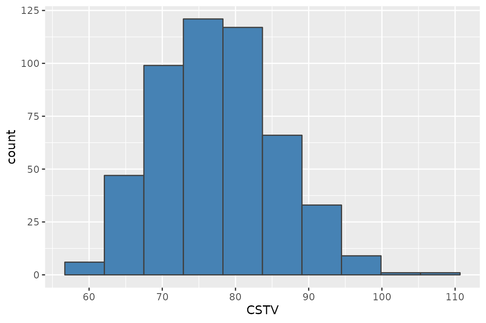
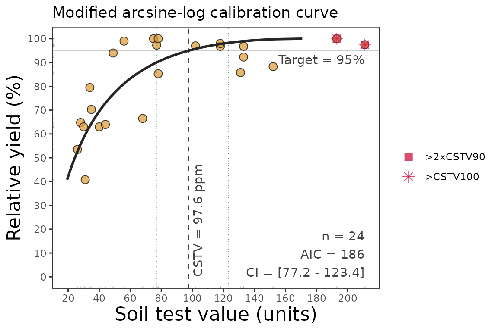
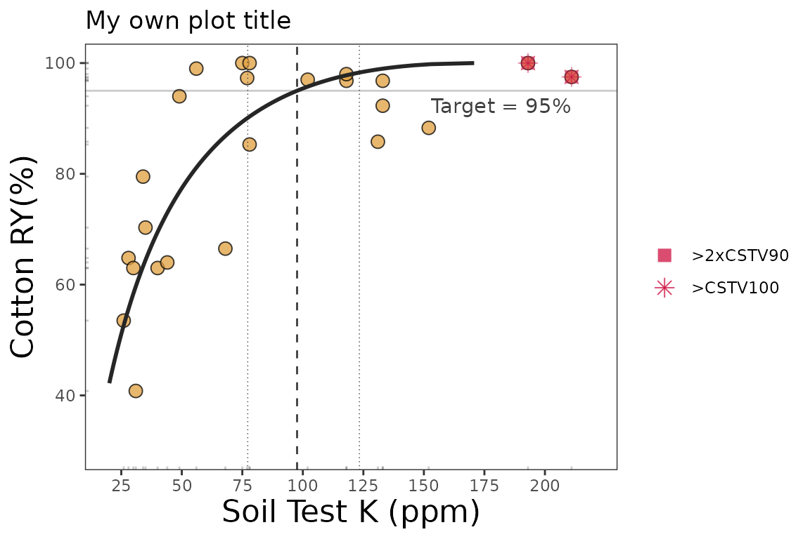
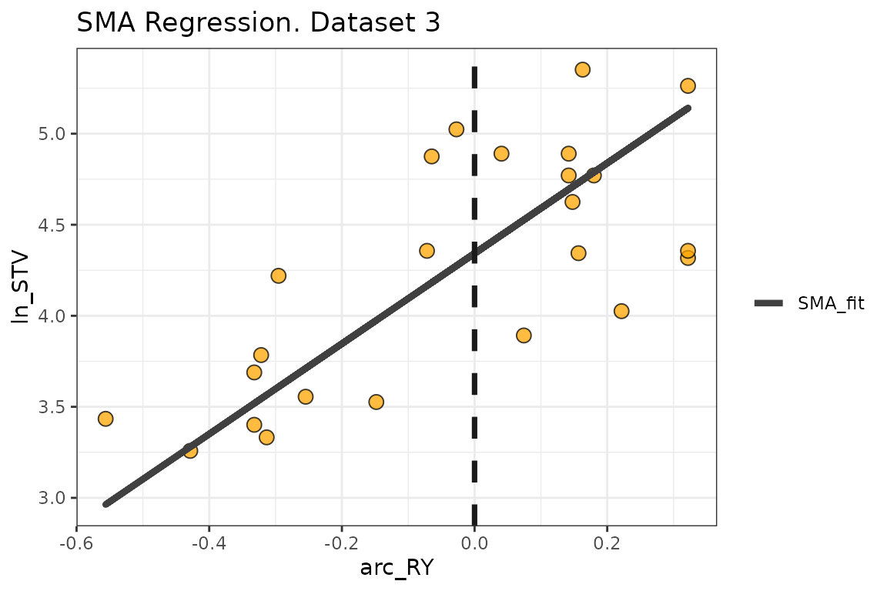
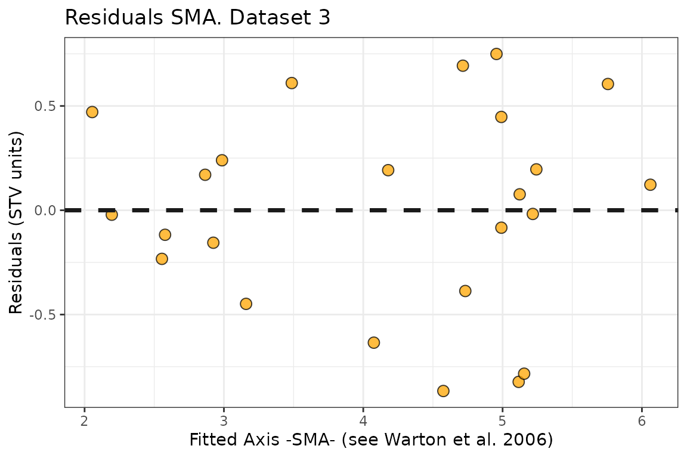

Description
This tutorial is intended to show how to deploy the
mod_alcc() function for estimating critical soil test
values using the Modified Arcsine-Log Calibration Curve, originally
introduced by Dyson & Conyers (2013) and modified by Correndo et
al. (2017). This function produces the estimation of critical soil test
values (CSTV) for a target relative yield (ry) with
confidence intervals at adjustable confidence levels. Behind the scenes,
the mod_alcc() is based on the standardized major axis
(SMA), a bivariate regression model that assumes that both axis are
random variables (Warton et al., 2006).
General Instructions
- Load your dataframe with soil test value (
stv) and relative yield (ry) data. - Specify the following arguments into the function
mod_alcc()data(optional)stv(soil test value) andry(relative yield) columns or vectors,targetof relative yield (e.g. 90%),-
desired
confidencelevel (e.g. 0.95 for 1 - alpha(0.05)).- Used for the estimation of critical soil test value (CSTV) lower and upper limits.
tidyTRUE (produces a data.frame with results) or FALSE-default- (store results as list),plotTRUE (produces a ggplot as main output) or FALSE (default; no plot, only results as data.frame or list)
- Run and check results.
- Check residuals plot, and warnings related to potential leverage points.
- Adjust curve plots as desired with additional
ggplot2functions.
Tutorial
Suggested packages
# Install if needed
library(ggplot2) # Plots
library(dplyr) # Data wrangling
library(tidyr) # Data wrangling
library(purrr) # MappingThis is a basic example using three different datasets:
Load datasets
# Native fake dataset from soiltestcorr package
corr_df <- soiltestcorr::freitas1966Fit mod_alcc()
1. Individual fits
RY target = 90%, confidence level = 0.95, replace with your desired values
1.1. tidy = FALSE
It returns a LIST (may be more efficient for multiple fits at once)
# Using dataframe argument, tidy = FALSE -> return a LIST
mod_alcc(data = corr_df, ry = RY, stv = STK, target=90, confidence = 0.95,
tidy = TRUE)
#> Warning: One or more original RY values exceeded 100%. All RY values greater
#> than 100% have been capped to 100%.
#> Warning: 2 STV points exceeded the CSTV for 100% of RY.
#> Risk of leverage. You may consider a sensitivity analysis by removing extreme points,
#> re-run the mod_alcc(), and check results.
#> Warning: 2 STV points exceeded two-times (2x)
#> the CSTV for 90% of RY. Risk of leverage. You may consider a sensitivity analysis by
#> removing extreme points, re-run the mod_alcc(), and check results.
#> # A tibble: 1 × 18
#> n r RMSE_alcc AIC_alcc AIC_sma BIC_sma p_value confidence target CSTV
#> <int> <dbl> <dbl> <dbl> <dbl> <dbl> <dbl> <dbl> <dbl> <dbl>
#> 1 24 0.728 10.3 186. 17.0 22.9 5.57e-5 0.95 90 76.9
#> # ℹ 8 more variables: LL <dbl>, UL <dbl>, CSTV90 <dbl>, n.90x2 <int>,
#> # CSTV100 <dbl>, n.100 <int>, Curve <list>, SMA <list>1.2. tidy = TRUE
It returns a data.frame (more organized results)
# Using dataframe argument, tidy = FALSE -> return a LIST
mod_alcc(data = corr_df, ry = RY, stv = STK, target=90, confidence = 0.95, tidy = TRUE)
#> Warning: One or more original RY values exceeded 100%. All RY values greater
#> than 100% have been capped to 100%.
#> Warning: 2 STV points exceeded the CSTV for 100% of RY.
#> Risk of leverage. You may consider a sensitivity analysis by removing extreme points,
#> re-run the mod_alcc(), and check results.
#> Warning: 2 STV points exceeded two-times (2x)
#> the CSTV for 90% of RY. Risk of leverage. You may consider a sensitivity analysis by
#> removing extreme points, re-run the mod_alcc(), and check results.
#> # A tibble: 1 × 18
#> n r RMSE_alcc AIC_alcc AIC_sma BIC_sma p_value confidence target CSTV
#> <int> <dbl> <dbl> <dbl> <dbl> <dbl> <dbl> <dbl> <dbl> <dbl>
#> 1 24 0.728 10.3 186. 17.0 22.9 5.57e-5 0.95 90 76.9
#> # ℹ 8 more variables: LL <dbl>, UL <dbl>, CSTV90 <dbl>, n.90x2 <int>,
#> # CSTV100 <dbl>, n.100 <int>, Curve <list>, SMA <list>1.3. Alternative using the vectors
You can call stv and ry vectors using the
$.
The tidy argument still applies for controlling the
output type
fit_vectors_tidy <- mod_alcc(ry = corr_df$RY,
stv = corr_df$STK,
target = 90,
confidence = 0.95)
#> Warning: One or more original RY values exceeded 100%. All RY values greater
#> than 100% have been capped to 100%.
#> Warning: 2 STV points exceeded the CSTV for 100% of RY.
#> Risk of leverage. You may consider a sensitivity analysis by removing extreme points,
#> re-run the mod_alcc(), and check results.
#> Warning: 2 STV points exceeded two-times (2x)
#> the CSTV for 90% of RY. Risk of leverage. You may consider a sensitivity analysis by
#> removing extreme points, re-run the mod_alcc(), and check results.
fit_vectors_list <- mod_alcc(ry = corr_df$RY,
stv = corr_df$STK,
target = 90,
confidence = 0.95,
tidy = FALSE)
#> Warning: One or more original RY values exceeded 100%. All RY values greater
#> than 100% have been capped to 100%.
#> Warning: 2 STV points exceeded the CSTV for 100% of RY.
#> Risk of leverage. You may consider a sensitivity analysis by removing extreme points,
#> re-run the mod_alcc(), and check results.
#> Warning: 2 STV points exceeded two-times (2x)
#> the CSTV for 90% of RY. Risk of leverage. You may consider a sensitivity analysis by
#> removing extreme points, re-run the mod_alcc(), and check results.2. Multiple fits at once
# Example 1. Fake dataset manually created
data_1 <- data.frame("RY" = c(65,80,85,88,90,94,93,96,97,95,98,100,99,99,100),
"STV" = c(1,2,3,4,5,6,7,8,9,10,11,12,13,14,15))
# Example 2. Native fake dataset from soiltestcorr package
data_2 <- soiltestcorr::data_test
# Example 3. Native dataset from soiltestcorr package, Freitas et al. (1966), used by Cate & Nelson (1971)
data_3 <- soiltestcorr::freitas1966 %>%
rename(STV = STK)
data.all <- bind_rows(data_1, data_2, data_3, .id = "id")Note: the stv column needs to have the same name for all
datasets if binding rows.
2.1. Using map()
# Run multiple examples at once with purrr::map()
data.all %>%
nest(data = c("STV", "RY")) %>%
mutate(model = map(data, ~ mod_alcc(stv = .$STV, ry = .$RY, target = 90))) %>%
unnest(model)
#> Warning: There were 9 warnings in `mutate()`.
#> The first warning was:
#> ℹ In argument: `model = map(data, ~mod_alcc(stv = .$STV, ry = .$RY, target =
#> 90))`.
#> Caused by warning:
#> ! You have not specified the confidence level.
#> Please, modify if your desired confidence is different than the default (0.95)
#> ℹ Run `dplyr::last_dplyr_warnings()` to see the 8 remaining warnings.
#> # A tibble: 3 × 20
#> id data n r RMSE_alcc AIC_alcc AIC_sma BIC_sma p_value
#> <chr> <list> <int> <dbl> <dbl> <dbl> <dbl> <dbl> <dbl>
#> 1 1 <tibble> 15 0.968 1.45 59.6 -23.5 -20.0 3.30e- 9
#> 2 2 <tibble> 137 0.716 10.5 1038. -1.04 13.6 7.31e-23
#> 3 3 <tibble> 24 0.728 10.3 186. 17.0 22.9 5.57e- 5
#> # ℹ 11 more variables: confidence <dbl>, target <dbl>, CSTV <dbl>, LL <dbl>,
#> # UL <dbl>, CSTV90 <dbl>, n.90x2 <int>, CSTV100 <dbl>, n.100 <int>,
#> # Curve <list>, SMA <list>Note: the output table is still generated despite warnings regarding confidence level and leverage points.
2.2. Using group_modify()
Alternatively, with group_modify, nested data is not
required. However, it still requires a grouping variable (in this case,
id) to identify each dataset. group_map() may
also be used, though list_rbind() is required to return a
tidy data frame of the model results instead of a list.
data.all %>%
group_by(id) %>%
group_modify(~ mod_alcc(data = ., STV, RY, target = 90, confidence = 0.95))
#> Warning: One or more original RY values exceeded 100%. All RY values greater
#> than 100% have been capped to 100%.
#> # A tibble: 3 × 19
#> # Groups: id [3]
#> id n r RMSE_alcc AIC_alcc AIC_sma BIC_sma p_value confidence
#> <chr> <int> <dbl> <dbl> <dbl> <dbl> <dbl> <dbl> <dbl>
#> 1 1 15 0.892 1.79 66.1 -82.7 -79.1 7.84e- 6 0.95
#> 2 2 137 0.569 11.6 1067. -290. -275. 4.14e-13 0.95
#> 3 3 24 0.708 20.0 218. -5.01 0.885 1.10e- 4 0.95
#> # ℹ 10 more variables: target <dbl>, CSTV <dbl>, LL <dbl>, UL <dbl>,
#> # CSTV90 <dbl>, n.90x2 <int>, CSTV100 <dbl>, n.100 <int>, Curve <list>,
#> # SMA <list>3. Bootstrapping
Bootstrapping is a suitable method for obtaining confidence intervals for parameters or derived quantities. Bootstrapping is a resampling technique (with replacement) that draws samples from the original data with the same size. If you have groups within your data, you can specify grouping variables as arguments in order to maintain, within each resample, the same proportion of observations than in the original dataset.
This function returns a table with as many rows as the resampling size (n) containing the results for each resample.
set.seed(123)
boot_alcc <- boot_mod_alcc(data = corr_df,
stv = STK, ry = RY,
target = 90, n = 500)
#> Warning: There were 1332 warnings in `dplyr::mutate()`.
#> The first warning was:
#> ℹ In argument: `model = map(...)`.
#> ℹ In group 1: `boot_id = 1`.
#> Caused by warning:
#> ! One or more original RY values exceeded 100%. All RY values greater
#> than 100% have been capped to 100%.
#> ℹ Run `dplyr::last_dplyr_warnings()` to see the 1331 remaining warnings.
boot_alcc %>% head(n = 5)
#> # A tibble: 5 × 14
#> boot_id n r RMSE_alcc AIC_alcc AIC_sma BIC_sma p_value target CSTV
#> <dbl> <int> <dbl> <dbl> <dbl> <dbl> <dbl> <dbl> <dbl> <dbl>
#> 1 1 24 0.508 12.4 195. 11.9 17.7 0.0112 90 81.9
#> 2 2 24 0.750 9.50 182. 7.68 13.6 0.0000240 90 61.8
#> 3 3 24 0.625 10.6 188. 10.6 16.5 0.00109 90 86.6
#> 4 4 24 0.688 8.96 179. 16.1 22.0 0.000204 90 72.4
#> 5 5 24 0.593 9.74 183. 13.3 19.2 0.00225 90 80.9
#> # ℹ 4 more variables: CSTV90 <dbl>, n.90x2 <int>, CSTV100 <dbl>, n.100 <int>
# CSTV Confidence Interval
quantile(boot_alcc$CSTV, probs = c(0.025, 0.5, 0.975))
#> 2.5% 50% 97.5%
#> 63.70241 77.17436 93.90476
# Plot
boot_alcc %>%
ggplot2::ggplot(aes(x = CSTV))+
geom_histogram(color = "grey25", fill = "steelblue", bins = 10)
4. Plots
4.1. Calibration Curve
We can generate a ggplot with the same mod_alcc()
function. We just need to specify the argument
plot = TRUE.
plt_alcc <- mod_alcc(data = corr_df,
ry = RY,
stv = STK,
target = 95,
plot = TRUE)
plt_alcc
4.2. Fine-tune the plots
As ggplot object, plots can be adjusted in several ways, such as modifying titles and axis scales.
plt_alcc +
# Main title
ggtitle("My own plot title")+
# Axis titles
labs(x = "Soil Test K (ppm)",
y = "Cotton RY(%)") +
# Axis scales
scale_x_continuous(limits = c(20,220),
breaks = seq(0,220, by = 25)) +
# Axis limits
scale_y_continuous(limits = c(30,100),
breaks = seq(20,100, by = 20))
3.2. SMA regression
Behind the scenes, the mod_alcc() runs a Standardized
Major Axis regression (SMA).
We can extract the SMA fit and also check the residuals of this model out as follows:
fit_3 <- mod_alcc(data = corr_df, ry = RY, stv = STK, target = 90)
# Extract SMA regression fit and residuals from fit_3 (data_3, (Freitas et al., 1966))
SMA_freitas_1966 <- fit_3$SMA %>% as.data.frame()
SMA_freitas_1966 %>%
ggplot(aes(x = arc_RY, y = ln_STV))+
ggtitle("SMA Regression. Dataset 3")+
geom_point(shape=21, fill = "orange", size = 3, alpha = 0.75)+
#SMA Line
geom_path(aes(x=arc_RY, y = SMA_line, linetype = "SMA_fit"), linewidth = 1.5, col = "grey25")+
scale_linetype_manual(name="", values = c("solid"))+
#Critical value
geom_vline(xintercept = 0, col = "grey10", size = 1.25, linetype = "dashed")+
theme_bw()+
# Axis titles
labs(y = "ln_STV", y = "asin(sqrt(RY))-centered")
3.3. SMA residuals
# Residuals plot
SMA_freitas_1966 %>%
ggplot(aes(x = fitted_axis, y = residuals))+
ggtitle("Residuals SMA. Dataset 3")+
geom_point(shape=21, fill = "orange", size = 3, alpha = 0.75)+
geom_hline(yintercept = 0, col = "grey10", linewidth = 1.25, linetype = "dashed")+
theme_bw()+
# Axis titles
labs(x = "Fitted Axis -SMA- (see Warton et al. 2006)", y = "Residuals (STV units)")
References
Correndo, A.A., Salvagiotti, F., García, F.O. and Gutiérrez-Boem, F.H., 2017. A modification of the arcsine–log calibration curve for analysing soil test value–relative yield relationships. Crop and Pasture Science, 68(3), pp.297-304. 10.1071/CP16444
Dyson, C.B., Conyers, M.K., 2013. Methodology for online biometric analysis of soil test-crop response datasets. Crop & Pasture Science 64: 435–441. 10.1071/CP13009
Warton, D.I., Wright, I.J., Falster, D.S., Westoby, M., 2006. Bivariate line-fitting methods for allometry. Biol. Rev. Camb. Philos. Soc. 81, 259–291. 10.1017/S1464793106007007